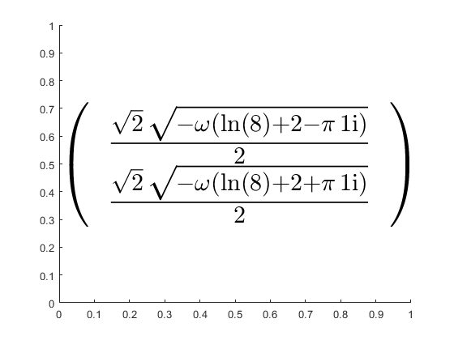
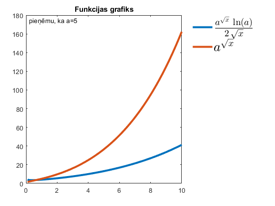

Ievads simboliskajā matemātikā
Mērķis: iepazīties ar MatLab simbolisko matemātiku
Contents
1. uzdevums
Atrisināt vienādojumu un smuki attēlot rezultātu
syms x z = solve(((log(x/2))/(x^2+1))-1) pretty(z) zLatex = latex(simplify(z)); strZ = ['$',zLatex,'$'];
z = (-wrightOmega(log(8) - pi*1i + 2)/2)^(1/2) (-wrightOmega(log(8) + 2 + pi*1i)/2)^(1/2) / / wrightOmega(log(8) - pi 1i + 2) \ \ | sqrt| - ------------------------------- | | | \ 2 / | | | | / wrightOmega(log(8) + 2 + pi 1i) \ | | sqrt| - ------------------------------- | | \ \ 2 / /
Attēlošu 1. uzdevuma risinājumu mums pierastā rakstā:
text(0,0.5,strZ,'Interpreter','Latex','FontSize',32)
2. uzdevums
Nointegrēt funkciju un uzzīmēt grafiku
syms x
y = (a^sqrt(x)*log(a))/(2*sqrt(x));
yInt = int(y);
Uzzīmēsim 2. uzdevuma grafiku izmantojot uzdevumā doto 'x' vērtību diapazonu
syms x a y = (a^sqrt(x)*log(a))/(2*sqrt(x)); % pati funkcija x = [0.1:0.01:10];
Tā kā 'a' vērtība nav zināma, tad es pieņemšu, ka 'a' = 5
a = 5;
veiksim funkcijas vektorizāciju
yVek = vectorize(y) yVekInt = vectorize(int(y))
yVek =
'(a.^(x.^(1./2)).*log(a))./(2.*x.^(1./2))'
yVekInt =
'a.^(x.^(1./2))'
tad ievietosim x vērtību
yRez = eval(yVek); yRezInt = eval(yVekInt);
Zīmēsim abus rezultātus. Gan pašu funkciju, gan tās integrāli
plot(x,yRez,x,yRezInt,'linewidth',3) yLatex = latex(y); yLatexInt = latex(int(y)); title('Funkcijas grafiks') h = legend(['$',yLatex,'$'],['$',yLatexInt,'$']); set (h,'Interpreter','Latex','FontSize',20); legend('Location','northeastoutside'); text(0.2,175,'pieņēmu, ka a=5');
Secinājums
Iespējams, esmu nekorekti uzzīmējis 2. uzdevuma grafiku, jo nebiju meklējis "a" vērtību, bet gan patvaļīgi ieliku skaitli. Ar rezultātu esmu apmierināts! Tiesa, bija nedaudz jāpačakarējas, jo šur tur sakumā biju sajaucis apaļās iekavas ar kvadrāt iekavām un kādu laiku "sitos", kamēr sapratu savu neuzmanības kļūdu.